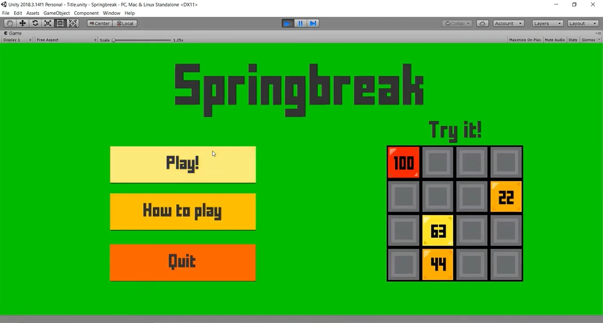
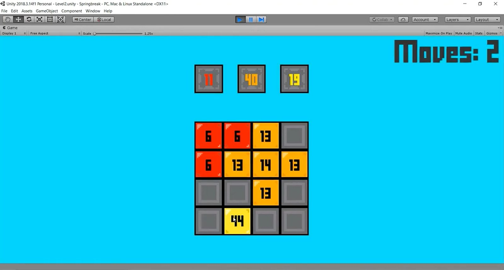
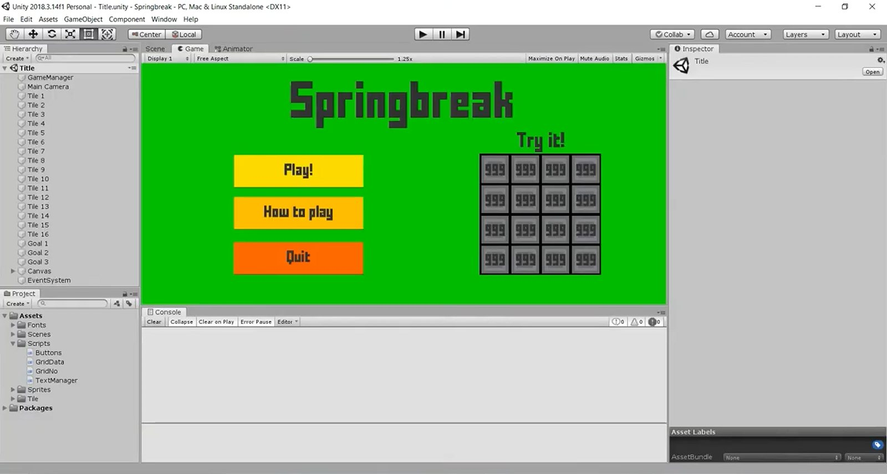

Puzzle game
Springbreak
Divide and add the number tiles until they match the objective.

Overview
Springbreak is a number puzzle on a 3×3 to 5×5 grid. Tiles can be split apart and added together, and the goal is to create tiles that match the target numbers shown above the board in as few moves as possible.
Gameplay

The title screen doubles as a tutorial: the small “Try it!” grid lets players experiment with the mechanic before starting a level.
Development
Built in Unity with C#. Scripts handle the grid data, tile numbers, buttons and on-screen text, with each level set up as its own scene.
